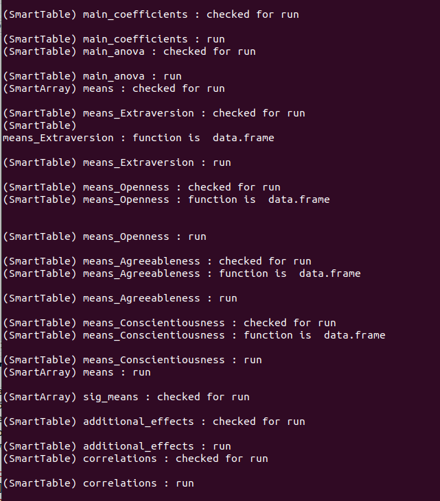
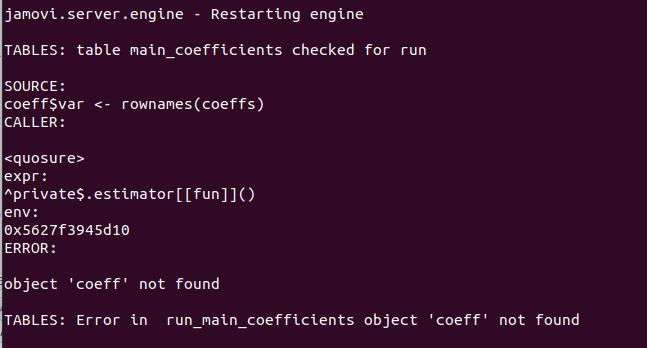
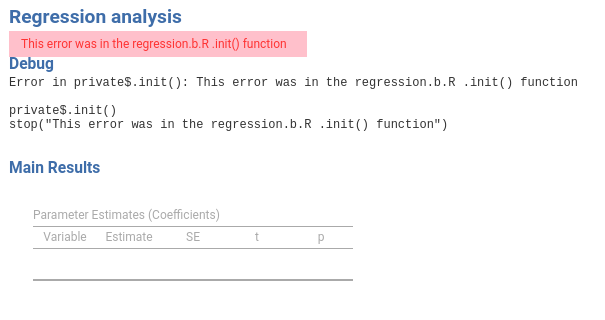
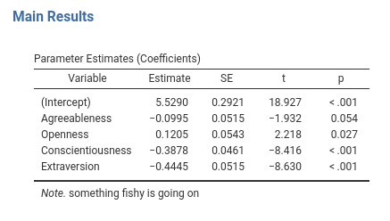
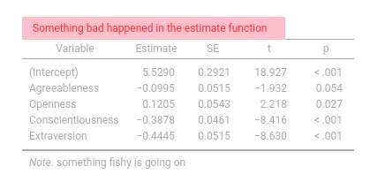
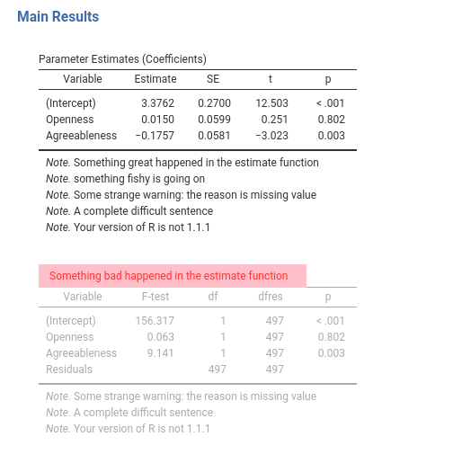
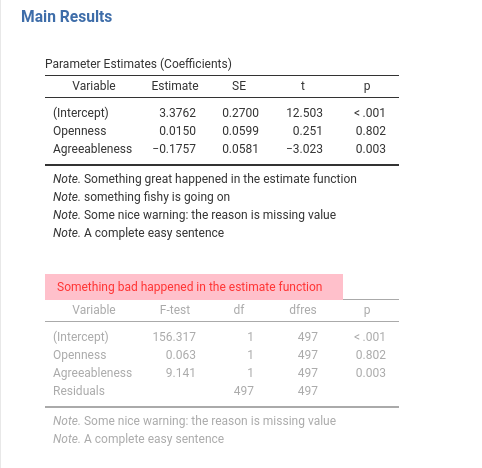

Chapter 6 Warning, Failing and Debuging
6.1 Introduction
Before we dive into more sophisticated topics, such as formatting Tables, we should briefly consider the sad fact that sooner or later our code will fail and we need to debug it. Debugging a module in jamovi may be difficult, because when you see the error in the jamovi output, it is often difficult to understand when the error comes from, especially if your code is complex and you have many different tables. In jamovi, you want to have toggled on developer mode, to see informative errors. However, jmvScaffold offers also some methods and functions to help us out.
First, when we copied the files from the jmvScaffold package into the module .R/ function in 1.3, one file copied was named jScafFunctions.R. The file head contains three constants
j_DEBUG <- TRUE
j_INFO <- TRUE
t_INFO <- TRUEwe want to set them all to TRUE. After re-installing, we launch jamovi from command line,
In linux:
prompt:~$ flatpack run org.jamovi.jamovi In windows:
# Note: I should buy a windows machine6.2 Tables debugging
We can now see in console all the calls to the tables and the process to fill them. For example:

This shows a listing made by the module we are building: The SmartTable coefficients in group main is checked for running. It is then run. The same goes for anova in main and the other tables. The array means is initialized (it says inited) and run, etc.
6.3 Mark landmarks
Another useful function is mark(...). Mark simply cat in the console whatever is passed to it, after some formatting. The advantage of mark over cat is that mark can be turned on and off changing the constant j_DEBUG in jmvScafFunctions.R file. Very similar is the function jinfo(...), which is meant to print to the console landmarks and checkpoints. This is turned on and off with the constant j_INFO. The difference between mark() and jinfo() is basically their name. The idea is to use jinfo() to landmark the code (like jinfo("Init phase"), ginfo("Run phase") ) as a stable reference, whereas to use mark() when debugging and then remove it from the code. Having different names makes greping mark easier when we clean the code.
When the module is ready to get published, one sets j_DEBUG, j_INFO and j_TABLE to false e nothing will be printed in the console.
6.4 Automatic Errors
This is useful when something fails so we can see where the problem is. Let’s make our code fail, by making a mistake in the run_main_coefficients function in the Runner.R (see coeff rather than coeffs).
run_main_coefficients=function() {
.summary <- summary(self$model)
coeffs <- .summary$coefficients
coeffs <- as.data.frame(coeffs)
names(coeffs) <- c("coef","se","t","p")
coeff$var <- rownames(coeffs) ## misspelled name
return(coeffs)
},Running the module now produces an error in the corresponding table.

Notice that the module did not fail completely, only the table affected by the error was not filled. We now know that there’s something wrong in the function running the table. We can also check the console to gather some more information.

From the listing we can see that the error was in run_main_coefficients and the object ‘coeff’ was not found. When errors are more complicated, the console listing gives more information than the jamovi table, but one of the two should be enough to get you going in finding the bug.
If the error is outside the tables, such as in the .b.R, you get an error at the beginning of the output.

6.5 Automatic Warnings
A SmartTable automatically gathers warnings from the filling functions and display them as notes of the jamovi tables. We can try this by producing a warning in the run_main_coefficients function.
run_main_coefficients=function() {
.summary <- summary(self$model)
coeffs <- .summary$coefficients
coeffs <- as.data.frame(coeffs)
names(coeffs) <- c("coef","se","t","p")
coeffs$var <- rownames(coeffs)
warning("something fishy is going on")
return(coeffs)
},
So, you do not have to worry about capturing warnings, they are automatically displayed. If you do not want to show warnings automatically, you can capture them within the function and process them as needed, or simply ignore them. To avoid engulfing the tables, a max of 5 automatic notes are added to the table when the warning comes from the filling function. Repeated warnings are displayed only once.
6.6 Code-generated Warnings and Messages
Very often, you want to pass messages to tables from outside their filling function. You may, for instance, add a note saying that there are missing values in the data, and the user should be careful in interpreting the results. Other times, you may have a recap table at the beginning of the output, and you want to send a footnote to it to signal that something happens worth mentioning. As an example, assume that a warning is generated in our runner$Estimate(), which does not communicate directly to any table.
To broadcast message from anywhere in your module to any table, we can use a method that our Runner class inherits from the parent class Scaffold. The method is named $warning. This method accepts a warning as a list of the form list(topic="atablename",message="a text to diplay") and sends them to SmartTable and SmartArray.
We just need to use it where ever we need in the Runner object. In the example, we alter the Estimate() function to produce a message:
#...#
estimate=function() {
formula <- jmvcore::composeFormula(self$analysis$options$dep,self$analysis$options$covs)
self$model <- stats::lm(formula,data=self$analysis$data)
self$warning<-list(topic="main_coefficients",
message="Something great happened in the estimate function")
},
#...# The $warning accepts a list with two fields: topic is the nickname of the table that should receive the message,
message is the message. Running this code, we obtain:

You can see that now the table shows two notes: one sent by the filling function with a warning (the fishy message) and one sent by the Estimate() function, from different parts of the code. One can add any number of notes.
Finally, you can also send an error from anywhere in the code to a table, using the property error. We exemplifies this by sending a message to main_anova table.
estimate=function() {
formula <- jmvcore::composeFormula(self$analysis$options$dep,self$analysis$options$covs)
self$model <- stats::lm(formula,data=self$analysis$data)
self$error<-list(topic="main_anova",
message="Something bad happened in the estimate function")
},
If you want to send an error message that would stop completely the execution of the analysis, you can add
the field final=TRUE to the list passed to $error, such as
#...#
self$error<-list(topic="main_coefficients",
message="Something bad happened in the estimate function", final=TRUE)
#...#
6.7 Transient messages
The are other cases in which you want your message to disappear after execution. Typical case is when some of your table would require a lot of time to execute, and this is known in advance. For instance, the user may select bootstrap inference rather than standard one, so you want to send a message while the bootstrap is being computed that this may take a while. You can do that by sending a message with the initOnly=TRUE field.
#...#
self$warning<-list(topic="main_coefficients",
message="This may take a while", initOnly=TRUE)
#...#This message will be shown until the table is filled, and disappears afterward. We go back to this later on.
6.8 Capturing warnings and errors
When your module starts doing complex computations, often in different files, it becomes useful to capture warnings and errors from the R functions and deal with them programmatically. jmvScaffold offers a useful function that can execute code and capture errors and warnings. The function is named try_hard(...,max_warn=5).
The function try_hard() accepts as argument any R code, executes it, and returns a list of the form list(obj,error,warning,message). obj contains the output of the code, error is either FALSE or the error message produced by the code, warning is either FALSE or a list of warning messages produced by the code, message is either false or a list of messages produced by the code. Let’s use it in an example.
Assume you are programming somewhere a function to produce some stats. Say your function is
as.numeric(c(1,"a",2)) ## Warning: NAs introduced by coercion## [1] 1 NA 2If the function is in a table filling function the warning will appear in the jamovi table notes, otherwise will be lost. If you want to get control of the warnings (or error) you can use try_hard().
outcome<-try_hard({
as.numeric(c(1,"a",2))
})
outcome## $error
## [1] FALSE
##
## $warning
## [1] "NAs introduced by coercion"
##
## $message
## [1] FALSE
##
## $obj
## [1] 1 NA 2Now you can decide what to do with the outcome variable. You can stop the processing (in case error is not FALSE), you can ignore it, you can pass the warning to a table as we did before in 6.6. try_hard() never fails, so it is the programmer responsibility to handle possible error that would void the results of the input code. By default, it limits the number of warnings to 5, so your tables will not be cluttered by notes. You can change this default with the option max_warn.
6.9 Unwanted or unfriendly warnings
You are going to use a lot of different R packages to run your module. Great as they are, sometimes R packages produce warnings that are either very difficult to understand for the user, or simply not informative in jamovi. A warning may be about some recommended options in R that cannot be toggle in jamovi, or some technical warning that you have already solved in your code but still produce the warning. Of course, one can capture each single case and handle it in the code, but often the unwanted warning appears in several parts of the code, so it would affect many of the module tables.
jmvScaffold offers a simple mechanism to handle unwanted warnings without affecting the module ability to emit other warnings. The trick is to define, somewhere in your module (like a R/constants.R file), a list named TRANS_WARNS. This list should contain lists of the form list(original="some words",new="new words or NULL"). Let’s see an example.
Assume the main_anova table produces three warnings, one that you would prefer to translate completely, one that you want to change only in part, and one that you want to suppress. Assume the same is emitted by main_coefficients
#...#
run_main_coefficients=function() {
.summary <- summary(self$model)
coeffs <- .summary$coefficients
coeffs <- as.data.frame(coeffs)
names(coeffs) <- c("coef","se","t","p")
coeffs$var <- rownames(coeffs)
warning("something fishy is going on")
warning("Some strange warning: the reason is missing value")
warning("A complete difficult sentence")
warning("Your version of R is not 1.1.1")
return(coeffs)
},
#...#
run_main_anova=function() {
.anova <- as.data.frame(car::Anova(self$model,type=3))
names(.anova) <- c("nothing","df1","test","p")
.anova$df2 <- self$model$df.residual
.anova$var <- rownames(.anova)
warning("Some strange warning: the reason is missing value")
warning("A complete difficult sentence")
warning("Your version of R is not 1.1.1")
return(.anova)
},
#...# If you run it, you should see the warnings beneath both tables.

Now we want to get rid of the warning Your version of ..., substitute A complete difficult sentence with A simple sentence and change Some strange warning: leaving the reason is missing value in the sentence. In a R/constants.R file (or whatever file in your package), we prepare the TRANS_WARNS list as follows:
#...#
TRANS_WARNS=list()
TRANS_WARNS[[1]]<-list(original="Some strange warning",new="Some nice warning")
TRANS_WARNS[[2]]<-list(original="A complete difficult sentence",new="A complete easy sentence")
TRANS_WARNS[[3]]<-list(original="Your version of R is not",new=NULL)
#...#This means that in any warning emitted within your module, “Some strange warning” will be replaced by “Some nice warning”; “A complete difficult sentence” will be replaced by “A complete easy sentence”, and any warning containing “Your version of R is not” will be discarded. Running the code produces the expected warnings.
